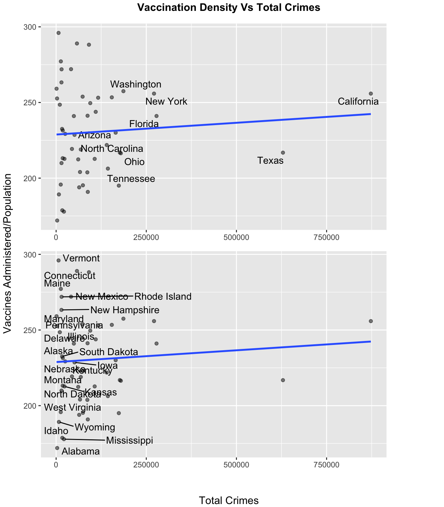
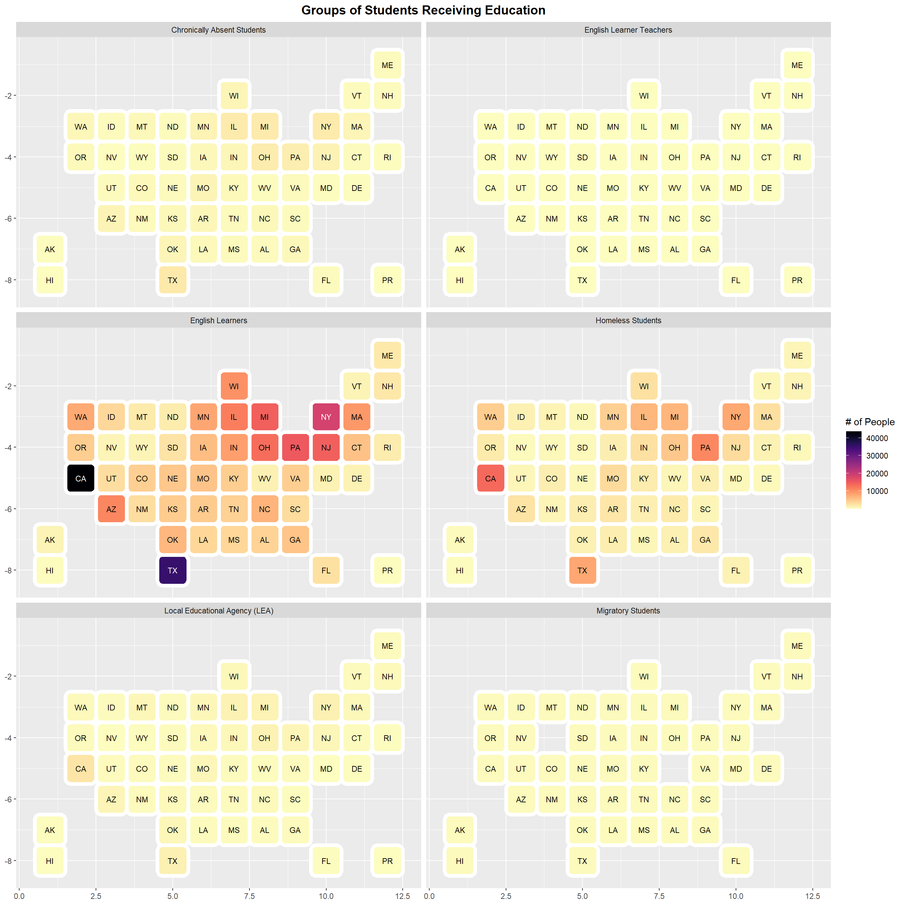
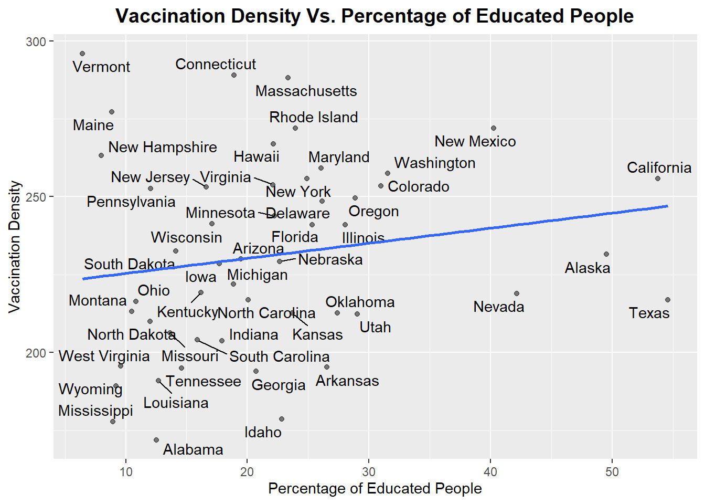
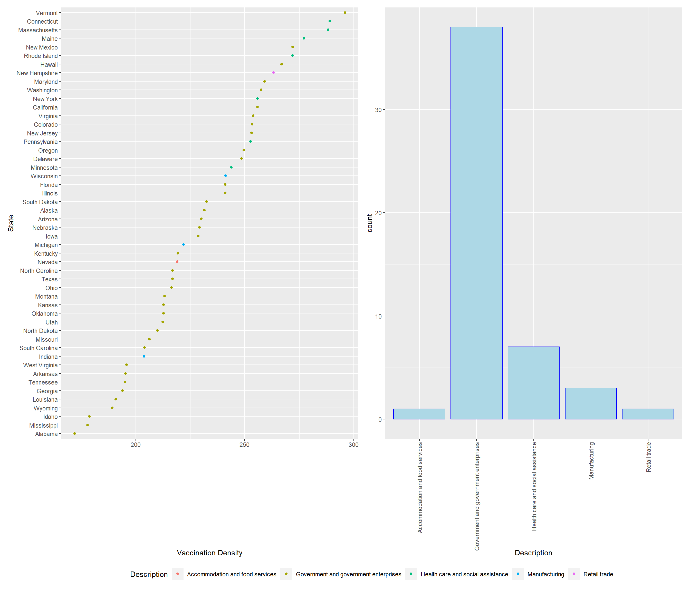
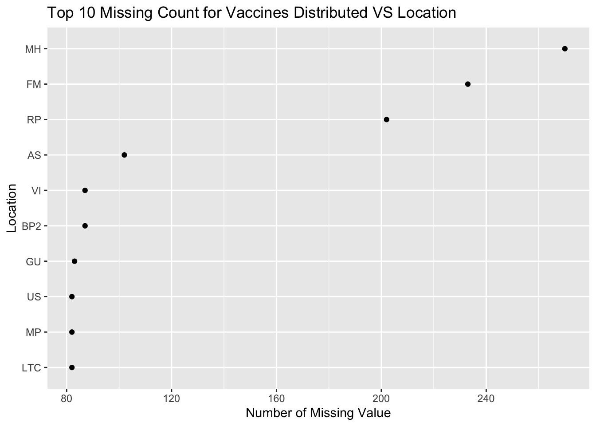

Chapter 5 Results
5.1 Correlation between Vaccination, level of education, and the type of employment which is dominant in a state

The above plot displays the number of vaccines distributed each month. It seems that the maximum number of vaccines were distributed in October, 2021, followed by Spetember 2021. Additionally, it is important to note that states with huge population like California and Texas received the maximum number of vaccines. Thus, we can conlcude that the vaccines were distributed as per the population of each state. States with higher population received more vaccines than states with less popualation.

The above plot indicates the percentage of people educated in each state. We can see that the states of Texas, California, Colorado have the maximum literacy rate (between 30 to 55 percent) while some states such as Wyoming and Montana have the least literacy rate (between 6.5 to 12 percent).

The above graph shows the number of different kind of students who were receiving education. There were very few students who remained absent from schools and colleges. This shows that the students are serious about the education and attend the classes regularly. English Learner Teachers and Migratory students were very low in number and are evenly spread across the country. We can also note that fairly very few students attained their education from Local Educational Agency.
Another important thing to look at is the number of English learners. These type of students are predominantly more localized in big states such as California and Texas. Additionally, an interesting feature to note is that the number of homeless students attaining the education are also larger for these states. It is also a good sign that there are more number of homeless students who are working towards receiving their education.

Therefore, from the plot above, we can analyze that as the percentage of educated people increases, the vaccination density also increases. Although the slope of the graph is not large indicating that there is not much dependence, but still it depicts that there will be some improvement in the vaccination rate if more people are educated.
Some interesting trend to note is that California and Texas both has a very large percentage of educated people but still California had a better Vaccination Density than Texas. While there are some other states as well such as Vermont and Maine where the percentage of educated people are very less but still they have a very high number of vaccine administration density.

The above plot on the left displays the number of Vaccination Density (vaccines administered/population) in each state and the type of employment that is prominent in that particular state historically. We can observe that the majority of the people who have been administered a vaccine work in Government Enterprises or in Health Care Services. This might be happening because of the certain government policies wherein in front-line healthcare workers were being vaccinated first and thus the majority of the population vaccinated is composed of them.
Additionally, state of New Hampshire, where the dominant profession is Retail Trade also shows a good percentage of people having vaccinated. Some states like Alabama and Mississippi have the lowest vaccination density even when the primary profession of people in those states is a government job. This indicates that government of these states should focus more on the vaccination drive. Nevada being a heavy employer in accommodation services is doing good but can definitely work on it’s vaccination program to get more people vaccinated.
The graph on the right indicate the number of states that have a particular kind of maximum employment areas historically. This shows that maximum states in US have been historically employing people in government enterprises. Thus, these states should have been better in terms of vaccination. But as we can see from the graph on the left, people from these area of employment have not been quite enthusiastic about the vaccination drive in some states.
5.2 Correlation between Wastage of Vaccinates, and the type of local elected party in a state

The main motive behind answering this question is to relate the vaccine wastage in a particular state. As the exact details about vaccine wastage is not released by the government, we try to define a metric which can capture the vaccine wastage in a particular state across united states. The vaccination dataset available for public usage lists two columns namely “Administered Vaccine doses” and “Distributed Vaccine Doses”. This two columns represent the amount of vaccine distributed to a state on a particular and the amount of vaccine used by the state on a particular date.
We take the difference between this two values to arrive at an approximate metric which denotes as to how much vaccine was actually given to the public on the given day. To normalize the results along different states, We divide this difference with the population of a particular state. Hence the final metric is defined as follows:
\[ Metric = \frac{( Administered - Distributed )}{State Population} \]
The above graph then shows which state has the highest value of the metric faceted along with the political party ruling that state during the vaccination period. As we can see the value of the metric is significantly higher for states with republican ruling party (In the range of 30 - 110). On the other hand the value of the metric is spread out and significantly lower for states with democratic ruling party (In the range of 15 - 70). States ruled by Democratic party governor can be considered one of the factor contributing to the lower number of vaccine wastage on a particular day.
Also for states with higher number of successful vaccination per population such as Vermont, Connecticut and Massachusetts have a lower value of metric indication that the states with large number of population vaccination also has vaccine wastage on a lower side.